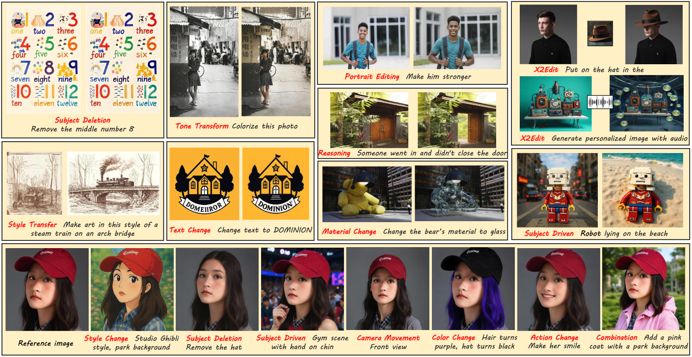
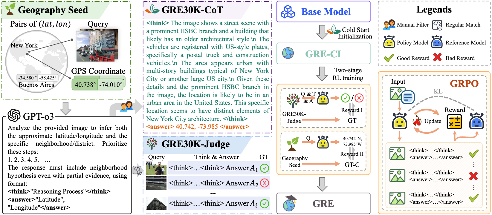

|
Zihao Pan I am an undergraduate student at Sun Yat-sen University (SYSU). My research interests mainly revolve around generative modeling and multimodal learning. I am always open to research discussions and collaborations : ) Email / Google Scholar / Github / |

|
News[Nov. 2025] One paper is accepted by AAAI 2026 [Sep. 2025] One paper is accepted by NeurIPS 2025 |
Selected Publications |
|  |
X2Edit: Revisiting Arbitrary-Instruction Image Editing through Self-Constructed Data and Task-Aware Representation Learning
|
|  |
GRE Suite: Geo-localization Inference via Fine-Tuned Vision-Language Models and Enhanced Reasoning Chains
|
Experience |
|
Dec. 2025 - Present, Alibaba Future Laboratory Unified Multimodal Modeling and Efficient Video Generation |
|
Sep. 2025 - Dec. 2025, LongCat Team, Meituan Intern advised by Manyuan Zhang, Unified Multimodal Modeling |
|
|
Jun. 2025 - Aug. 2025, AI Center, OPPO Image Editing |
|
Last Update 2025.12.12. Thanks to Jon Barron. |